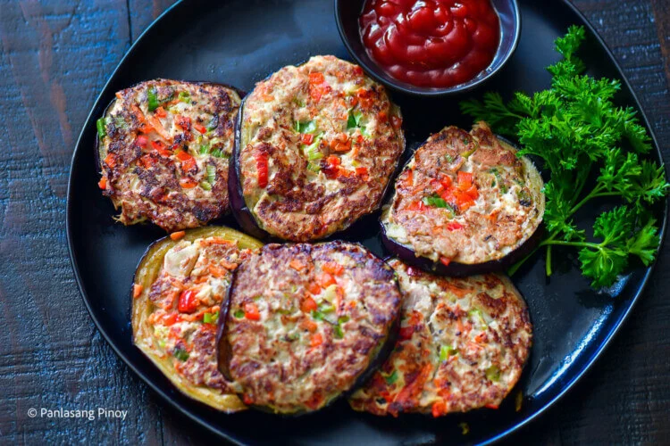

Back
Relyenong Talong with Tuna

Ingredients
Instructions
JUMP TO VIDEO
Nutrition Information Calories: 475kcal (24%) Carbohydrates: 28g (9%)
Protein: 24g (48%) Fat: 32g (49%) Saturated Fat: 3g (15%) Polyunsaturated
Fat: 9g Monounsaturated Fat: 19g Trans Fat: 0.1g Cholesterol: 112mg (37%)
Sodium: 408mg (17%) Potassium: 1168mg (33%) Fiber: 12g (48%) Sugar: 16g (18%)
Vitamin A: 3976IU (80%) Vitamin C: 51mg (62%) Calcium: 85mg (9%) Iron: 3mg (17%)